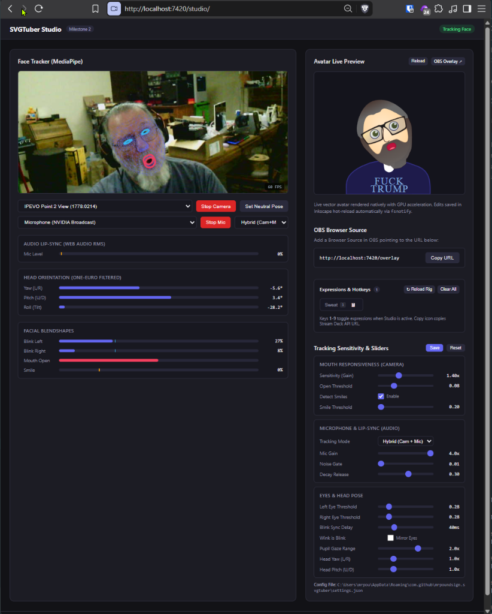
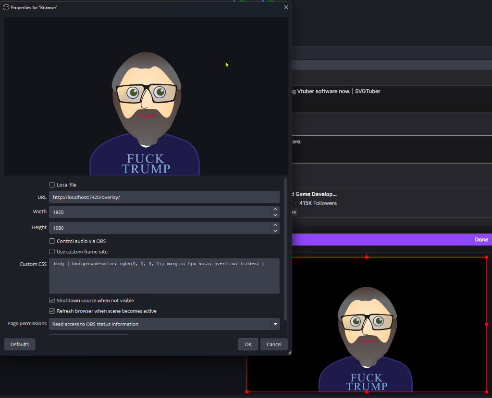
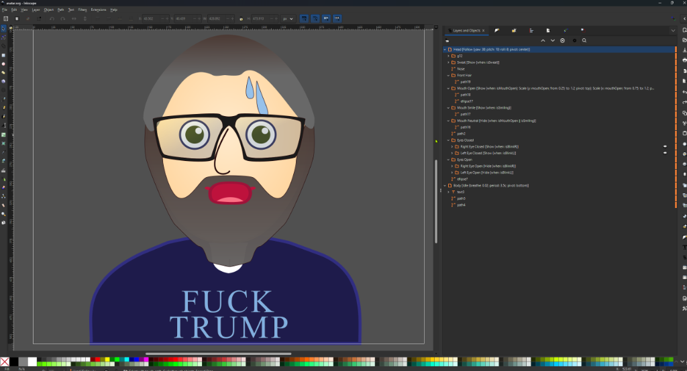

Turn Any SVG Drawing Into a Live 60 FPS VTuber
SVGTuber animates layered vector artwork from Inkscape, Vectorcraft, or Adobe Illustrator directly inside an OBS Studio Browser Source at native 4K/8K vector resolution—with webcam face tracking, microphone lip-sync, spring hair physics, modular accessories, and zero 3D engine overhead.
Edit your SVG character in Inkscape and hit Ctrl+S—your live OBS stream updates in milliseconds without dropping a frame.

Native Desktop Companion & Guided Windows Installer
Install in seconds with SVGTuber-Setup.exe or run portably from any folder. Launching svgtuber opens a compact desktop control window with no background console clutter:
🟢 Live Studio & Overlay Counters
See the exact number of connected Web Studio tabs (Connected Studios) and external OBS Browser Sources (Connected Overlays) in real time.
🛡️ Streamer Mode Privacy Shield
One-click toggle synchronized between the Desktop Window and Web Studio—hides raw webcam video (keeping the 478-point mesh visible) and redacts URLs, ports, and local file paths on stream.
🎮 Native Elgato Stream Deck Plugin
Detects your installed plugin version and offers 1-click Install / Update / Reinstall for hardware expression toggles, outfit swaps, and pose recalibration.
⬆️ SHA-256 Verified Self-Updater
Check GitHub Releases and apply verified updates directly from the Desktop Window, the Web Studio header badge, or the CLI (svgtuber -update).
Three Zero-Scroll Workspaces & Camera Face Auto-Zoom
Open http://localhost:7420/studio to control your avatar across three focused workspaces designed so your live avatar preview is always visible:
🎥 Live Stage (Stream)
Side-by-side Face Tracker (with 🔍 Auto-Zoom: ON/OFF face centering) and Live Avatar Stage above a full-width Expressions (1–9) & Equipped Accessories deck.
🎀 Wardrobe & Props
Attach standalone SVG props (hats, glasses, cat ears, sweat drops) to any bone on your avatar and position, scale, and layer them in the interactive Dressing Room.
🎛️ Calibration & Life
Tune Mouth & Audio (Noise Gate, Voice Bounce), Eyes & Head (Independent Winks, Head-Turn Blink Stabilizer, Eyebrow Range), and Idle Life & Physics.
Zero-CPU Vector Rendering in OBS Studio
Add a single Browser Source in OBS Studio pointing to http://localhost:7420/overlay:
- Infinite Vector Resolution: Renders directly in OBS Chromium (CEF) with GPU acceleration—razor-sharp at 1080p, 1440p, or 4K with pure alpha transparency (no Chroma Key needed).
- 4 Starter Avatars Included: Ships ready to stream with the Default Chibi Avatar, Expressive Cow Avatar (
cow_avatar.svg), Retro CRT Robot (robot_avatar.svg), and Triangle Mecha Robot (triangle_robot_avatar.svg), plus 6 modular SVG accessories. - Webcam + Mic or Audio-Only PNGTuber Mode: Stream with full 478-point MediaPipe facial tracking + audio lip-sync, or turn the camera off and let autonomous Auto-Blink, Auto-Gaze, and Auto-Tilt keep your character alive.

Simple Layer Tagging & One-Command AI Auto-Rigging
Rig characters in minutes by adding human-readable tags to layer names in Inkscape, Vectorcraft, or Illustrator—or let an AI assistant rig your SVG automatically via svgtuber -mcp:
Head [Follow {track: yaw, pitch; amount: 18, 12}] [Tilt {amount: 0.7}]
Pigtail_Left [Physics {stiffness: 140; damping: 9; gravity: 1.2}] [Sway {follow: yaw; amount: -16}]
Eye_Left_Open [Hide {when: blinkL}]
Eye_Left_Closed [Show {when: blinkL}]
Brow_Left [Shift {track: browL; axis: y; amount: -10}]
Mouth_Talk [Show {when: speaking}]